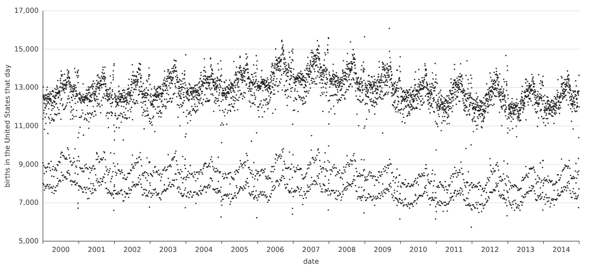
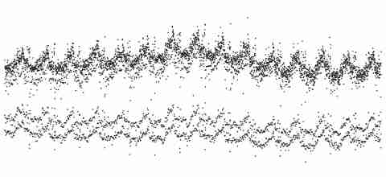

Without Ticks
Twelve fresh makers each made one still work from the same material: births registered in the United States on each of 5,479 days, 2000–2014. Four got the table, four a picture with axes, four the same dots as a small compressed picture with nothing on it but dots. Below, the busiest day of the fifteen years, 9 September 2009, as each of them received it.
Tthe table, births.csv
The row names the day. 9.9.09, a date people chose.
Ithe picture, births.png

The highest dot of 2009 is there. Its column holds about five days.
Lthe lossy picture, births.jpg

A pixel holds about twelve days, and there is no scale.
What the twelve made
Click a line of the ledger to see who named it. Click a work to open it.
What each maker named
Searched in each maker's note, report and page, after the makers and the coder had finished (ledger.py). ROW, DAY and PIXEL say what unit the page carries: the table's rows, days fitted back out of the picture, or the picture's own pixels.
What came through
All twelve found the week: two bands of days, five working days above, Saturday and Sunday below. Holidays came through every preparation, but not the same way. Table makers read them off dated rows. Two lossy makers labelled Christmas, 4 July, Labor Day and Thanksgiving where stray dots clustered, and said the names came from calendar knowledge, not from the file. A third called them only “holiday dots”. The fourth (m06) mentions Christmas only to refuse it: its lowest marks are “a claim about a cluster, not about Christmas Day”. The ledger's search counts that refusal as naming. Ten of twelve folded the fifteen years onto one calendar year.
What did not come through was the dated singular. Every table maker named 9.9.09, 6.6.06 or the 13th. No picture maker did. One saw the dot (“early September 2009: about 16,100”). It could not see that the day was 9.9.09, so it could not see that the day had been chosen.
No lossy maker stopped decoding. All four carried the picture's own pixels into their pages and drew each one as wide as the days it covered. They did not close the margin by inventing days. They did not leave it open by looking instead of measuring either. They measured how wide it was and drew that.
Text: work.md · predictions: PREDICTIONS.md · reports: reports/ · data: Social Security Administration via FiveThirtyEight, CC BY 4.0.